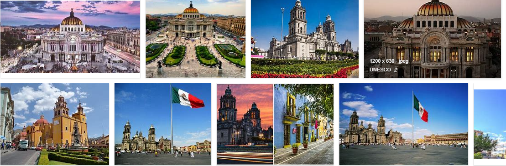

Paises
Otros Paises
MEXICO

México, oficialmente los Estados Unidos Mexicanos, es un país soberano ubicado en la parte meridional de América del Norte; su capital y ciudad más poblada es la Ciudad de México. Políticamente es una república representativa, democrática, federal y laica, compuesta por 32 entidades federativas.
Características de México. Límites geográficos y ubicación; México se encuentra en América del Norte, limita con los Estados Unidos (al norte) y con las naciones de Guatemala y Belice (al sur). Posee además costas en el océano Atlántico, mar Caribe y golfo de México (al este) y con el océano Pacífico (al oeste).
Una ciudad única La Ciudad de México es la más antigua de América (fundada en 1325), es la segunda más poblada del...
Una ciudad barata Comparada con otras capitales del mundo, la ciudad de México resulta muy económica para visitantes...
Una ciudad viva todos los días A diferencia de ciudades europeas en donde los...
Futbol
BRASIL

Brasil, oficialmente República Federativa de Brasil, es un país soberano de América del Sur que comprende la mitad oriental del subcontinente y algunos grupos de pequeñas islas en el océano Atlántico.
El turismo en Brasil es una actividad importante en varias regiones del país. Con 6 600 000 visitantes extranjeros en 2017, Brasil es el segundo destino del mercado turístico internacional en América del Sur después de Argentina y ocupa el tercer lugar en América Latina en términos de turistas internacionales, después de México y la ya mencionada Argentina.
BARCELONA

Barcelona es una ciudad española, capital de la comunidad autónoma de Cataluña, de la provincia homónima y de la comarca del Barcelonés. Con una población de 1 664 162 habitantes en 2020, es la segunda ciudad más poblada de España y de la península ibérica después de Madrid, y la décima de la Unión Europea. El área metropolitana de Barcelona tiene 3 339 279, y el ámbito metropolitano de Barcelona, cuenta con 4 895 876 habitantes, siendo así la quinta ciudad de mayor población de la Unión Europea.
Barcelona es una ciudad llena de originales opciones de ocio que animan a visitarla una y otra vez. Abierta al mar Mediterráneo y afamada por Gaudí y su arquitectura modernista, Barcelona se revela como una de las capitales europeas más trendy. La ciudad es un foco de nuevas tendencias en el mundo de la cultura, la moda y la gastronomía.
ALEMANIA

Alemania, oficialmente República Federal de Alemania, es uno de los veintisiete estados soberanos que forman la Unión Europea. Constituido en Estado social y democrático de derecho, su forma de gobierno es la república parlamentaria y federal. Su capital es Berlín. Está formado por dieciséis estados federados y limita al norte con el mar del Norte, Dinamarca, Suecia y el mar Báltico; al este con Polonia y la República Checa; al sur con Austria y Suiza; y al oeste con Francia, Luxemburgo, Bélgica y los Países Bajos. La ciudad de Büsingen am Hochrhein, enclavada en Suiza, también forma parte de Alemania. El territorio de Alemania abarca 357 022 km² de extensión y posee un clima templado. Con casi 83 millones de habitantes, es el país más poblado entre los estados miembros de la Unión Europea, y es el hogar del tercer mayor grupo de emigrantes internacionales. Después de Estados Unidos, Alemania es el segundo destino de las migraciones más popular en el mundo.
El turismo en Alemania constituye un sector económico de primer orden, llegando a facturar en 2018 más que el de construcción de maquinaria. El país es el octavo más visitado del mundo y el cuarto dentro de la Unión Europea. La mayoría de los turistas extranjeros provienen de Países Bajos, seguido por suizos y estadounidenses. Además, un tercio de los alemanes pasan sus vacaciones en su propio país. Así por ejemplo, en 2018, 34 por ciento de los turistas nacionales pasaron sus vacaciones en Alemania, teniendo por destino principal Mecklemburgo-Pomerania Occidental gracias a sus playas en el mar Báltico.
JAPON

Japón, oficialmente Estado del Japón, es un país insular de Asia Oriental ubicado en el noroeste del océano Pacífico. Limita con el mar de Japón al oeste y se extiende desde el mar de Ojotsk en el norte hasta el mar de China Oriental y Taiwán en el sur. Parte del anillo de Fuego del Pacífico, Japón comprende un archipiélago de 6852 islas que cubren 377 975 kilómetros cuadrados; las cinco islas principales del país, de norte a sur, son Hokkaidō, Honshū, Shikoku, Kyūshū y Okinawa. Tokio es la capital y ciudad más grande de Japón aunque Yokohama, Osaka, Nagoya, Sapporo, Fukuoka, Kobe y Kioto también son ciudades grandes e importantes.
El turismo en Japón es considerado el mejor de Asia y cuarto a nivel global según el Índice de Competitividad en Viajes y Turismo de 2017. Además obtuvo puntuaciones relativamente altas en casi todos los aspectos, especialmente en salud e higiene, seguridad y protección, recursos culturales y viajes de negocios.